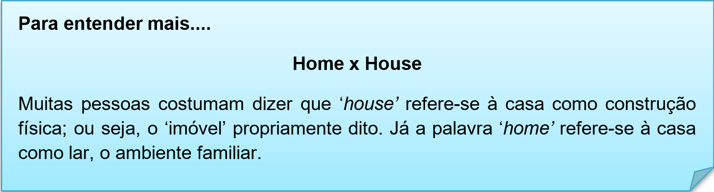

Capítulo 2 - Constructions – Construções
Nessa unidade vamos explorar o vocabulário sobre construções, assim como verbos e expressões que cercam esse setor. Vamos iniciar com material bruto de uma construção.
Contextualizando - verbos e expressões relacionados a construção
Glossário:
Transport – verbo transportar
Measure – verbo medir
Mark – verbo sinalizar
Construct – construir
Ferramentas mais utilizadas na construção
Assista ao vídeo sobre o vocabulário de construção e aprenda mais sobre pronuncia das palavras
Glossário – Partes de uma construção
Attic = Sótão
Back yard = Quintal
Ceiling = Teto
Cellar = Celeiro
Chimney = Chaminé
Deck = Terraço
Dining room = Sala de jantar
Door = Porta
Door handle = Maçaneta da porta
Doorbell = Campainha da porta
Floor = Assoalho, Piso, Chão
Front yard = Pátio da Frente
Ground floor = Térreo
Hallway = Corredor
Hedge = Cobertura
Laundry room = Área de Serviço
Lawn = Gramado, Grama
Living room = Sala de estar
Roof = Telhado
Room = Sala
Staircase = Sacada
Steps = Degraus
Wall = Parede
Window = Janela
Balcony = Sacada
Basement = Porão
Garage = Garagem
Living room = Sala de Estar
Office = Escritório
Bedroom = Quarto
Bathroom = Banheiro
Kitchen = Cozinha
Laundry / washhouse = Lavanderia
Porch = Varanda
Garden = Jardim
Storeroom / Pantry = Despensa
Utility room = Despensa
Você sabia?
Essa imagem é uma PLAN OF HOUSE, planta de casa.
Reconstruindo conhecimentos – Expressões usadas na construção civil
Esse setor da construção utiliza muitas expressões, vamos conhecer algumas para melhorar nossa comunicação dentro desse tema.
You can actually spray concrete onto a surface to form a thick, uneven coating = Você pode efetivamente esparramar sobre uma superfície de concreto de modo a formar um revestimento espesso e irregular.
The drainage system needs careful construction = O sistema de drenagem necessita de uma construção cuidadosa.
He has a basic construction of brick under a tiled roof = Ele tem uma construção básica de tijolo debaixo de uma cobertura de telhas.
He’s a construction worker = Ele é um trabalhador da construção civil.
How is the construction going? = Como vai a construção?
The house is now under construction = A casa está agora em construção.
The construction blocked the entrance to the street = A construção bloqueou a entrada da rua.
The rightmost lane is now under construction = A faixa mais a direita agora está em construção.
Our new school building is under construction = Nosso novo prédio da escola está em construção.
A crane raises heavy construction materials = Um guindaste levanta materiais de construção pesados.
A lot of construction is going on these days = Um monte de construção está surgindo esses dias.
It will be removed when the construction is finished = Isso será removido quando a construção for concluída.
The boss owes several months’ salary to the construction workers = O patrão deve salário de vários meses para os trabalhadores da construção civil.
Most marbles are soft, and not very abrasion resistant = A maioria dos mármores são suaves, e não muito resistente à atrito.

O que aprendi
• Nesta unidade aprendemos o vocabulário do setor da construção;
• Vimos os verbos mais usados nas construções;
• Aprendemos a diferenciar as palavras home x house;
• Na parte gramatical estudamos as estruturas de frases usadas na construção.
Praticando
Observe a plan of house e descreva em inglês as partes que essa casa terá e acordo com a sua planta.
Garage
_______________
_______________
_______________
_______________
_______________
_______________
_______________
Para construir um WALL (muro) qual materiais são necessário para concluir a obra.